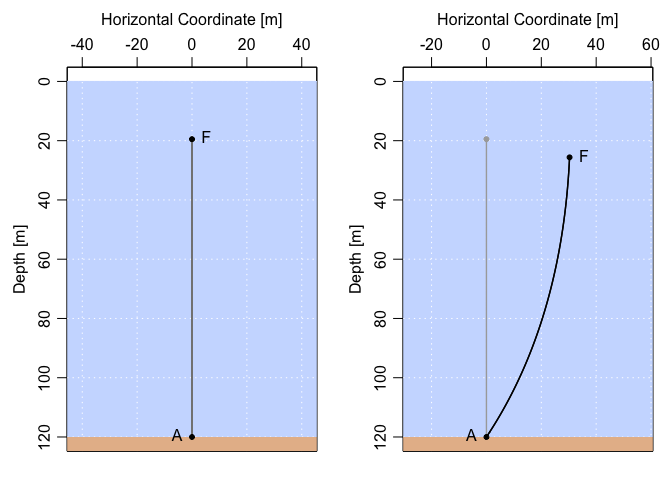

The goal of mooring is to facilitate computations of the extent of ‘knockdown’ of oceanographic moorings caused by ocean currents.
Installation
You can install the development version from GitHub with:
# install.packages("devtools")
devtools::install_github("dankelley/mooring")Example
This following shows how to assess the knockdown of a 20-inch float atop 100m of wire in a 0.5 m/s (roughly 1-knot) current. As an exercise, try increasing the current to 1 m/s to see how much further the float gets knocked down. Then try some other float types, using float("?") to get a list of the types that are supported.
library(mooring)
# Design a mooring with a 20-inch float attached to a bottom anchor with 100m of wire cable.
m <- anchor(depth=120) + wire(length=100) + float("HMB 20")
m
#> Mooring in 120 m of water, with 3 elements, listed top-down:
#> float model="HMB 20", buoyancy=34.5 kg, height=0.508 m, diameter=0.508 m, x=0 m, z=-19.192 m
#> wire model="1/4 wire/jack", buoyancy=-0.13 kg/m, length=100 m, width=0.008 m, x=0 m, z=-19.7 m
#> anchor model="default", height=0.3 m, x=0 m, z=-119.7 m
par(mfrow=c(1,2))
plot(m, fancy=TRUE)
# Discretise wire portion (to 1m spacing), then apply a 0.5 m/s current.
md <- discretise(m)
mdk <- knockdown(md, u=0.5)
plot(mdk, fancy=TRUE)